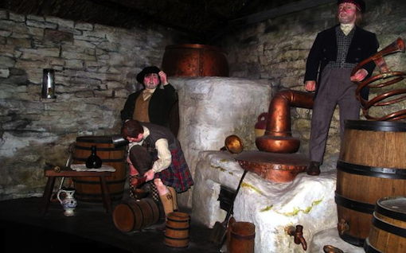
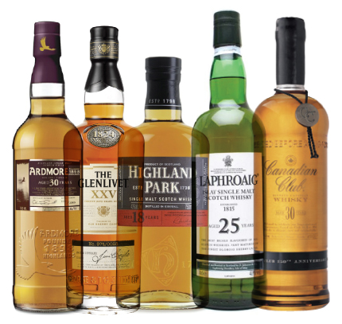
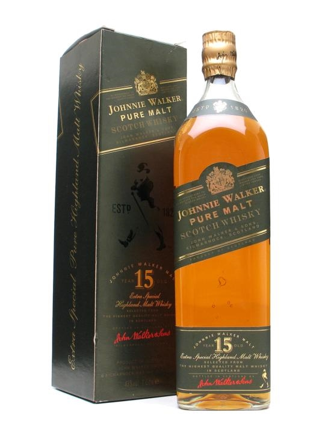
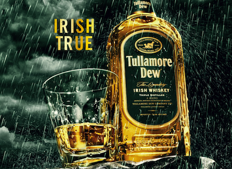
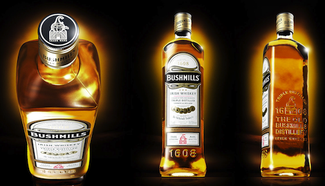
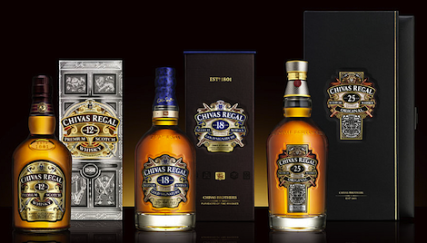
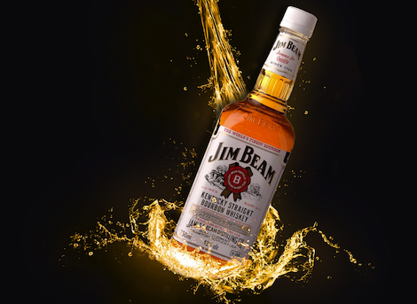
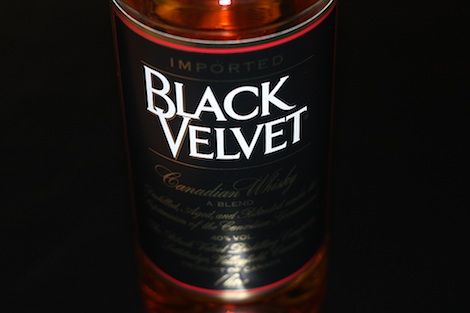
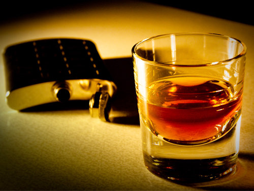

История виски
История виски не однозначна. Две небольшие, но очень гордые страны, Шотландия и Ирландия, уже не одно столетие оспаривают друг у друга право называться прародительницей виски. Скорее всего, точка в этом споре не будет поставлена никогда, слишком уж далеко уходят корни происхождения этого благородного алкогольного напитка.
История виски по версии Шотландии
Согласно одной из версий, в Шотландию знания о дистилляции были принесены христианскими миссионерами, с которыми своим секретом поделились крестоносцы, прошедшие походами по Ближнему Востоку. Заменив виноград ячменем, предприимчивые шотландцы весьма вдохновились результатом, да так, что назвали напиток не иначе как водой жизни, или uisge beatha. Пришедшие несколько позже английские завоеватели переняли на свой лад название, и через несколько вариантов произношений, в конце концов, пришли к современному варианту, который звучит как виски.
Мифическая версия Ирландии
Ирландцы обладают своей, несколько мифической, однако не менее интересной легендой происхождения культового напитка. Покровитель Ирландии, Святой Патрик, как только появился на Зеленом Острове, сделал два очень важных дела: обратил всех язычников в веру и создал «святую воду». Помимо сказаний о Святом Патрике, не забывают ирландцы и о реальной исторической личности, Энесе Коффи, который еще в 1830 году смог усовершенствовать перегонный куб. Справедливости ради заметим, что авторство куба принадлежит шотландцу Роберту Стейну.
Первый виски был лекарством
Первый виски производился в шотландских монастырях. Объемы производства были совсем небольшими, но и использовался виски не совсем обычно – в качестве лекарственного препарата. Однако стоило секрету перегонки попасть за пределы монастырских стен, как им моментально воспользовались крестьяне, увидев в виски источник хорошего дополнительного дохода.
В шестнадцатом и семнадцатом веках скотч производился уже во всей Шотландии, хотя, конечно же, о чистом продукте и речи быть не могло. Сырьем был ячмень, иногда рожь и, видимо от безысходности, овес. Несколько проведенных дистилляций увеличивали крепость продукта.
Качество виски резко упало в девятнадцатом веке
Без особых изменений в качестве, виски благополучно дожил до второй половины девятнадцатого века, когда была создана установка Коффи. Винокурни смогли значительно увеличить объем выпускаемого виски и постепенно от кустарного производства переходить к действительно промышленным масштабам. К сожалению, все это привело к резкому снижению качества выпускаемого продукта. Традиционные винокурни стали проигрывать большим цехам, оснащенным аппаратами непрерывной дистилляции.
Шотландские компании смогли выйти на мировой рынок и громко заявить о национальном продукте, но неповторимое качество скотча было практически утеряно.
В настоящее время среди огромного ассортимента представленного виски весьма непросто, а подчас и невозможно, найти напиток, изготовленный по оригинальной рецептуре.
Производственный процесс состоит из следующих основных стадий:
- Приготовление ячменного солода, или соложение ячменя. Ячмень тщательно перебирают, очищают и сушат. Затем его замачивают и рассыпают слоем в 5—7 см на полу солодовни для прорастания в течение 7—10 дней. Пророщенное зерно (солод) поступает на сушку. Если зерно не пророщено, то полученный виски называется зерновым (grain). В чистом виде он в продажу почти не поступает, а применяется для купажа. В Шотландии выпускают всего 4 марки чистого зернового виски в бутылках: Glen Wolf, Black Barrel, Glen Clyde и Invergordon.
- Сушка солода. В Шотландии солод сушат горячим дымом от сгорания торфа, древесного угля и буковых стружек, получая таким образом «копчёное зерно». В результате готовый продукт имеет характерный дымный йодисто-торфяной аромат, отличающий шотландский виски от всех прочих. В Ирландии и других странах дым для сушки солода не используется.
- Получение сусла. Солод размельчают, получая муку (grist), смешивают с горячей водой и выдерживают 8—12 часов, в результате чего получается сладкая жидкость (wort).
- Брожение (ферментация). К охлаждённому суслу добавляют дрожжи, и в течение двух суток производится брожение при температуре 35—37 °C. В результате брожения получается слабый спиртной напиток, похожий на пиво (wash) крепостью около 5 %. Третья и четвёртая стадии характерны для производства многих спиртных напитков и для виски не специфичны.
- Перегонка. Брагу перегоняют два (иногда три) раза в медных перегонных аппаратах (pot still), имеющих форму реторты. В результате дистилляции в первом аппарате (wash still) объёмом 7—23 тыс. литров получается жидкость крепостью 25—30 %, носящая имя «слабого вина» (low wines). Она поступает во второй аппарат (spirits still), имеющий объём 6—21 тыс. литров, и дистиллируется ещё один раз. Продуктом второй перегонки является виски крепостью до 70 %. Во время второй перегонки отделяют «голову» и «хвост», то есть те части дистиллята, которые выходят из аппарата в начале и в конце процесса перегонки, а отбирают только среднюю фракцию. Оставшиеся «голову» и «хвост» добавляют в low wines и опять направляют на перегонку. Форма перегонных аппаратов сильно влияет на окончательный вкус виски. Каждая винокурня имеют pot stills собственной формы и ёмкости. Считается, что высокие и узкие перегонные аппараты дают виски более лёгкий и тонкий, чем маленькие и широкие. Когда заменяют старые аппараты, то новые изготавливают, точно воспроизводя форму старых, вплоть до дефектов (выпуклостей и вмятин), чтобы сохранить вкус изготавливаемого виски. Полученный спирт разбавляют водой до крепости 50—63,5 % об.
- Выдержка. Производится в дубовых бочках. Наиболее подходящими считаются испанские бочки из-под хереса. Этот элемент технологии появился в XVIII в. с целью повторного использования бочек, в которых из Испании импортировалось вино, и оказался чрезвычайно удачным. Если виски выдерживается только в подобных бочках, то производитель сообщает об этом как о дополнительном свидетельстве высокого качества напитка. Поскольку таких бочек не хватает, применяют бочки из американского белого дуба, ранее содержавшие бурбон или специально обработанные дешёвым хересом. Именно на стадии бочковой выдержки виски приобретает характерные цветовые и вкусоароматические свойства: он темнеет, становится мягче, получает дополнительный аромат.
-
Купажирование. Для получения смешанных виски (Blended whisky) смешивают по отдельности различные сорта солодовых (от 15 до 50 сортов) и зерновых (3—4 сорта grain whisky) виски различных сроков выдержки (не менее 3 лет). Затем их соединяют и выдерживают ещё несколько месяцев. Некоторым рецептам уже сотни лет, но производители разрабатывают новые или видоизменяют старые в соответствии с требованиями рынка. Смысл купажирования состоит в использовании дешёвых зерновых виски, получении продукта стандартного качества и соединении лучших свойств различных сортов солодовых виски в одном готовом напитке. Первый смешанный виски, получивший широкое распространение, Old Vatted Glenlivet, был разработан Эндрю Ашером (Andrew Usher) в 1853 г. Производство смешанных виски в Великобритании регулируется законом с 1860 г. На мастере купажирования лежит сложная задача смешения сортов солодового и зернового виски таким образом, чтобы не только создать уникальный бленд, но и поддерживать из года в год его постоянство. Каждый отобранный для купажа виски мастер должен дегустировать сразу после дистилляции, а также во время его созревания в бочках. Существует два вида купажирования:
- различные сорта солодового и зернового виски смешивают в специальных сосудах, где выдерживают в течение 24 часов. Затем эту смесь помещают в бочки и через несколько недель разливают по бутылкам. Таким образом получается дешёвый виски;
- отбирают различные сорта солодового виски, затем в специальных сосудах смешивают с зерновым виски. С целью улучшения качества купажа его выдерживают в течение 6—8 месяцев в дубовых бочках. Этот период называют «свадьбой». Таким образом производят более дорогой высококачественный виски. - Розлив. Перед розливом виски фильтруют через бумажные мембраны при температуре от 2 до 10 °C (некоторые сорта виски не фильтруют, а очищают механическим способом для получения более богатого аромата и вкуса) и разбавляют родниковой водой до необходимой крепости (за исключением виски из Тенесси, который фильтруется перед выдержкой). Если на бутылке смешанного виски указан срок его выдержки, он относится к возрасту самого молодого виски, входящего в бленд. Если в купаже велика доля старых (от 12 лет выдержки) солодовых виски, то в названии виски присутствует слово De luxe.
Технология производства шотландского виски формировалась в течение более чем трёх столетий, вплоть до середины XIX в. Резкому росту производства в середине XIX в. способствовали гибель большинства европейских виноградников, пораженных завезенной из Америки филлоксерой (Vitis vitifolii, подотряд тлей), и изобретение эффективного перегонного аппарата в 1830 году.
Срок выдержки
По закону от 1860 года шотландский виски должен выдерживаться не менее 3 лет — только по прошествии этого срока солодовый дистиллят получает право называться whisky. Солодовые виски, не предназначенные для получения смешанных сортов, выдерживают от пяти до двадцати лет и более. Наиболее распространенные сроки выдержки — 10—12 лет (оригинальные сорта) и 21 год (эксклюзивные или коллекционные сорта). Некоторые редкие сорта виски выдерживаются 30—50 лет. Ирландский виски обычно выдерживается 5 лет, канадский — не менее 6 лет.
Классификация виски
Солодовый виски (Malt whisky) — виски, получаемый из чистого ячменного солода, без смешивания с зерновым (Grain whisky) виски. Солодовый виски бывает нескольких видов:
- Солодовый виски (Single malt) — виски, произведённый одной вискикурней, закрепившиеся в русском языке название "односолодовый" терминологически неверно, т.к. возможен купаж разных лет выдержки. Слово single относится к вискикурне, т.е. произведенный на одной вискикурне;
- Single cask — солодовый виски, взятый из одной бочки. Виски этой категории бывает бочковой крепости (Cask strength), а изредка разбавлен до стандарта.
- Quarter cask — солодовый виски, взятый из одной бочки из американского дуба меньшего размера; получается более крепкое (до 50 % об.) и более насыщенного вкуса. Созревает быстрее.
- Vatted malt (Blended malt, Pure malt) — смесь солодового виски с различных винокурен.
- Зерновой виски (Grain whisky) — почти полностью используется для производства купажированного виски, хотя небольшая часть поступает в розничную продажу как Single grain whisky — чистый зерновой виски, почти лишённый аромата. Кроме того, после дополнительной очистки зерновой виски может идти на изготовление водки или джина, для производства водки дистиллят перегоняется до пяти раз. Зерновой виски официально производится с 1909 года из импортируемой в Шотландию кукурузы с небольшой добавкой соложеного ячменя. При изготовлении этого напитка проводится лишь одна перегонка. Возможно, именно поэтому зерновой виски часто используют как техническое, промежуточное сырьё, служащее для приготовления самого распространённого типа виски — смешанного.
- Смешанный виски (Blended whisky) — виски, полученный путём купажирования (смешивания) солодового виски с зерновым виски. Наиболее популярный тип напитка, доля которого составляет свыше 90 % объёма производства. Смешанный виски с высоким содержанием солодового виски называется «Люкс» (Deluxe).
- Бурбон — кукурузный американский виски, производимый по специальной технологии.
Сорта солодового виски также можно классифицировать как «потребительский» и «виски от негоциантов». Первый обычно производится вполне индустриальными методами. Хотя и принято считать, что любой виски выдерживается в бочках, понятно, что традиционное полукустарное производство вряд ли может удовлетворить спрос мирового рынка. Ныне разработано много способов промышленного производства (говорить об этом изготовители виски не очень-то любят). «Потребительский» виски, выпускаемый поточным методом, до некоторой степени обезличен. Сохраняя особенности своего сорта, он лишен индивидуальных различий. Это обстоятельство привело к становлению небольшой индустрии «виски от негоциантов», когда независимые компании покупают «молодые» спирты и выдерживают напиток в соответствии со своими представлениями о культуре производства виски. Такие напитки обычно дороже, зато обладают большей индивидуальностью.
Технология изготовления
Вкусовые характеристики виски определяются множеством параметров, включая качество воды и зерна, способ соложения, фильтрации, особенностями бочки, длительностью выдержки, дизайном и формой медного перегонного куба, температурой воздуха при разливе в бутылки и т. п. Однако можно выделить два основных направления: «шотландское» и «ирландское». Первое отличается традицией сушить солод, используя в качестве топлива торф, что придает особый дымный вкус напитку; а второе «бесторфной» сушкой в печах и тройной перегонкой, что, в свою очередь придаёт виски мягкость.
Сырьевые составляющие
Согласно классической технологии, в Шотландии сырьём для производства виски (Scotch) служат ячменный солод и ячмень, в Ирландии (Irish whiskey) к ячменному солоду добавляют рожь. Ячмень для производства виски в Шотландии выращивается в нескольких районах, где он имеет специфические вкусовые свойства. В США и Канаде в качестве сырья для виски (Bourbon) используются кукуруза, рожь (Rye whiskey), пшеница (Wheat whiskey). В Японии для изготовления виски используют просо, кукурузу. В небольших количествах добавляют рис и другие зерновые.
Правила выбора виски в магазине
В большом супермаркете на полке с виски может стоять несколько десятков или даже сотен разных бутылок. Покупая виски первый раз, очень сложно сориентироваться в настолько широком ассортименте. Чтобы облегчить эту задачу я рассажу о критериях, влияющих на вкус и цену напитка. При выборе советую ориентироваться на следующие характеристики:
1. Вид виски. Это самая важная характеристика, влияющая на престижность и стоимость напитка. Виски бывает солодовым (делается только из чистого ячменя), зерновым (в производстве используются другие злаковые культуры) и купажированным (получают путем смешивания двух предыдущих видов).
Отдельно выделяется бурбон – американский кукурузный виски, который из-за отличий в технологии производства не попадает ни в одну из категорий.
Самым лучшим считается солодовый виски, он делится на следующие подвиды:
- Single Malt – виски, произведенный из соложеного ячменя на одной винокурне, зачастую является смесью спиртов разного срока выдержки, это классический и самый распространенный вариант, заслуживающие доверия производители: «Highland Park», «Aberlour», «Bowmore», «Dalmore Sirius»;
- Single Cask Malt – напиток из одной бочки (не смешивается с другими спиртами), сохраняет уникальный вкус и аромат, даже у одного производителя разные партии (бочки) по органолептическим показателям могут сильно отличаться, в продаже встречается нечасто, известная винокурня – «Tyrconnell»;
- Pure Malt – смесь односолодового виски разных винокурен, при правильном купаже скрывает недостатки спиртов, входящих в состав, зачастую эти напитки имеют стандартные усредненные свойства, насыщенность и богатство их вкуса зависит от мастерства винокура, самые удачные сочетания получаются у «Ballantine’s» и «Shieldaig».
- Single Grain - из-за низкого качества и отсутствия уникального вкуса зерновые виски в чистом виде не продаются, они нужны лишь для производства купажированых сортов. Единственное исключение – марка «Choice Old Cameron Brig», но найти её довольно сложно, особенно в России.
Купажированные виски (Blended) являются смесью солодовых и зерновых сортов. На этот вид приходится около 90% мировых продаж, иными словами он рассчитан на массовое потребление. Чем больше в составе солодового спирта, тем лучше и дороже будет купажированный виски.
Нельзя сказать, что это низкокачественные напитки. Всё зависит от подбора спиртов и технологии их смешивания. Например, всемирно известные марки «White Horse», «Chivas Regal» и «Johnnie Walker» тоже являются купажами.
2. Регион производства. Определяется по названию на этикетке. Маркировкой «Whisky» или «Scotch», обозначаются напитки, произведенные в Шотландии. Большинство скотчей (особенно произведенных на островах) имеют запах торфа и легкий привкус дыма. Рекомендую попробовать «Highland Park», «Macallan», «Lagavulin».
Ирландские сорта именуются «Whiskey», они отличаются мягким сбалансированным вкусом и стойким ароматом. Лучшие винокурни: «Bushmills», «Midleton» и «Cooley».
Американские кукурузные виски (в составе минимум 51% кукурузного спирта) называются «Bourbon». Эти напитки знамениты своим деликатным сладковатым вкусом, поэтому начинающим людитялям пить бурбон в чистом виде намного легче и приятнее, чем другие сорта. Самым разрекламированным представителем бурбонов является винокурня «Jim Beam» из штата Кентукки.
Исключение – еще одна известная американская марка «Jack Daniel’s». Несмотря на то, что напиток на 80% состоит из кукурузного дистиллята, Джек Дэниэлс именуется как «Tennessee Whiskey».
Канадские виски преимущественно делаются изо ржи, на их этикетке можно встретить надпись «RYE». Ничем особым они не выделяются. Японские напитки больше похожи на шотландские виски, например, «Nikka» и продаются в странах Азии.
3. Время выдержки. Именно после длительного настаивания в дубовых бочках спирт превращается в благородный напиток с уникальными свойствами. Возраст определяется сроком созревания самого молодого спирта. Для купажированных сортов это значит, что если на этикетке указана выдержка 12 лет, то самый молодой спирт провел в бочке не менее 12 лет. После разлива в бутылки возраст не считается. Минимальный срок выдержки виски – 3 года (бурбона – 2), но большинство производителей настаивают его намного дольше, в среднем от 5 до 10 лет. Именно на этот возраст нужно ориентироваться, выбирая виски. Не стоит покупать самые молодые сорта, так как зачастую их вкус оставляет желать лучшего. В течение последних двух десятилетий, стали использоваться новые типы бочек, не только из-под бурбона и хереса. Сегодня несложно встретить виски, который был выдержан в бочках из-под портвейна, мадеры, рома и различного вина. Иногда виски зреет в одной бочке на протяжении всего времени, но чаще всего виски переливают из хересной или бурбонной бочки в другую на финальную выдержку, которая длится от двух месяцев до двух лет (иногда производитель это указывает на этикетке).
4. Цена. Не всегда самые дорогие виски лучшие. Часто в цену закладывается известность бренда и стоимость упаковки (так называемые «подарочные виски»). Для личной дегустации советую ориентироваться на средний ценовой диапазон, в котором есть много достойных представителей.
Если выбираете виски в подарок человеку, который не является ценителем этого спиртного, лучше покупать напиток известного бренда в красивой дизайнерской бутылке или дорогой упаковке. Правильно подобрать виски знатоку можно лишь зная его предпочтения по виду и стране производства. Зачастую это очень сложная и неблагодарная задача.
В плане цены советую обратить внимание на еще один важный момент – стоимость выбранной бутылки. Она должна быть примерно одинаковой во всех магазинах (разница не больше 20%). Если в одном из магазинов цена значительно ниже, возможно, что это поддельный виски, употребление которого может привести к алкогольному отравлению. Покупать его опасно.
5. Вкус. Хотя технология приготовления всех видов виски во многом идентична, но благодаря нюансам на выходе получаются напитки с очень разным вкусом. Чтобы познакомиться с этим уникальным спиртным нужно продегустировать хотя бы несколько сортов из разных стран и только после этого делать вывод, нравится вам виски или нет.
Виски разных стран отличаются по вкусу
Проще всего, если вы еще точно не определились, какой виски выбрать, обратить внимание на страну-производительницу. Их перечень не слишком большой, и из наиболее традиционных, можно назвать лишь пять: Шотландия, Ирландия, Канада, Япония и США. Есть еще французский, индийский, австрийский, австралийский, немецкий, новозеландский и некоторые другие виски. Однако встретить их не так просто, в основном, они реализуются на локальных рынках.
В зависимости от страны, изменяются общие вкусовые и ароматные качества виски, которые, в свою очередь, становятся уникальными на каждой конкретно взятой винокурне.
Шотландский виски – самый популярный в мире
Шотландский скотч является самым популярным в мире. Виски, произведенному в этой стране, характерен привкус торфа, над огнем из которого коптится солод на одной из стадий производства. Как правило, хороший скотч должен немного пахнуть дымом, и его непросто пить неразбавленным. Среди наиболее известных марок: White Horse, Chivas Regal, Cardhu, Johnnie Walker, Glenfiddich.
Ирландский виски – идеальный для первого знакомства
Ирландский виски, некогда бывший очень популярным, к сожалению, утратил свои позиции еще в начале прошлого века, после введенного Великобританией эмбарго на его поставки. В стране осталось лишь три производителя: Midleton, Bushmills и Cooley.
Благодаря тройной перегонке и отсутствию стадии копчения, алкогольный напиток получается очень легким. К слову говоря, с ирландского виски, возможно, нужно начинать знакомство с виски вообще. Кроме мягкого вкуса, ему характерен особый привкус «черносмородинного куста». Самые популярные марки: Jameson и Tullamore dew.
Канадский виски
Виски, произведенный в Канаде, не так часто встречается на полках отечественных магазинов, однако найти его относительно легко. Как правило, основным сырьем для его производства служит кукуруза, можно встретить и ржаной виски, но редко. По канадским законам, в виски может быть добавлено до 9,09% дополнительных ингредиентов, в том числе водки, рома, коньяка, поэтому вкус может быть самым разным. Среди известных марок: Black Velvet и Canadian Club.
Японский виски – без вкуса дыма
В Японии виски является одним из самых любимых алкогольных напитков, хотя самостоятельно в этой стране его начали производить лишь в начале двадцатого века, а популярность он приобрел ближе к середине столетия. Делается по шотландской технологии, однако имеет не столь выраженный привкус дыма. Отличается стабильно высоким качеством, за что ценится во всем мире. На полках магазинов найти его нелегко, так как японцы потребляют больше виски, чем производят. Основные марки: Nikka, Suntory, Yamazaki, Yoichi.
Американский виски бурбон - имеет необычный вкус
Особенность американского виски состоит в том, что делается он, преимущественно, из кукурузы (такой виски официально именуется бурбон), хотя присутствуют и ржаной, пшеничный и солодовый варианты. Имеет весьма необычный вкус, который позволяет сразу его идентифицировать. В настоящее время, благодаря высокому качеству, стал довольно популярен в мире. Самые известные его представители: Jack Daniels и Jim Beam.
Как правильно пить виски
Зачастую культуру употребления виски формируют голливудские фильмы, в которых его смешивают с колой, содовой или льдом. С телевизионных экранов эти методы «перекочевали» в бары, рестораны и наши дома, став нормой. Теперь многие считают, что именно так правильно пить виски. На самом деле всё несколько иначе.
Добавлять лед, разбавлять содовой и смешивать с колой можно лишь виски невысокого качества, ароматический букет и вкус которых не представляют ценности, их задача – быстро опьянять. Хороший же напиток пьют в чистом виде, придерживаясь следующих шести правил.
- Обстановка. Виски лучше дегустировать дома с близкими людьми. Сначала нужно выключить телевизор и зашторить окна. Потом включить спокойную музыку и расслабится, забыв о повседневных проблемах. Так как это крепкое спиртное (40-60%), его принято пить во второй половине дня или вечером.
- Температура. Перед употреблением купленный виски следует охладить до 18-20°C. Более теплый напиток сильно разит спиртом, а при температуре ниже 18°C вы не почувствуете аромата даже самого лучшего виски.
- Стаканы. На этот счет есть два разных мнения. Первая группа дегустаторов считает, что виски правильно пить из роксов (тумблеров) – специальных стаканов с широким толстым дном. Другие эксперты советую использовать бокалы для вина, так как они лучше передают аромат. Выбор зависит от индивидуальных предпочтений человека, существенной разницы нет.
- Подача на стол. Охлаждённую бутылку виски вытирают полотенцем и ставят на стол. Очень важно чтобы поблизости не было цветов или других источников сильного запаха, которые будут перебивать аромат.
- В мужской компании виски разливает хозяин или каждый гость наливает его себе сам. Для нормального восприятия всей гаммы напитка бокал наполняют максимум на треть. Если в обществе есть дамы, за их бокалами следит мужчина.
- Процесс дегустации. Виски пьют небольшими глотками. Сначала оценивают аромат, потом несколько секунд держат напиток во рту и делают глоток, это усиливает приятное послевкусие.

По классическим канонам виски принято пить неразбавленным. Если за раз дегустируется несколько разных сортов, после каждой бутылки можно выпить стаканчик негазированной минеральной воды, чтобы очистить рецепторы для восприятия нового вкуса.
Шотландцы пользуются правилом пяти «S»:
- Sight (любоваться) — оценить цвета напитка;
- Smell (вдыхать) — почувствовать запах;
- Swish (смаковать) — пригубить и почувствовать вкус;
- Swallow (проглотить) — сделать первый глоток;
- Splash (разбавить) — разбавить водой для полного раскрытия вкуса и аромата.
Если вы не знаете, как любят пить виски ваши гости, лучше предоставить им возможность сами решить этот вопрос, поставив на стол минералку, содовую, колу и лед. Тогда никто не останется в обиде.
6. Закуска. Обычно виски не закусывают, сочетая его лишь с ароматной сигарой. Но в наших реалиях, где большое количество выпитого спиртного считается нормой, подумать о хорошей сытной закуске всё-таки стоит.